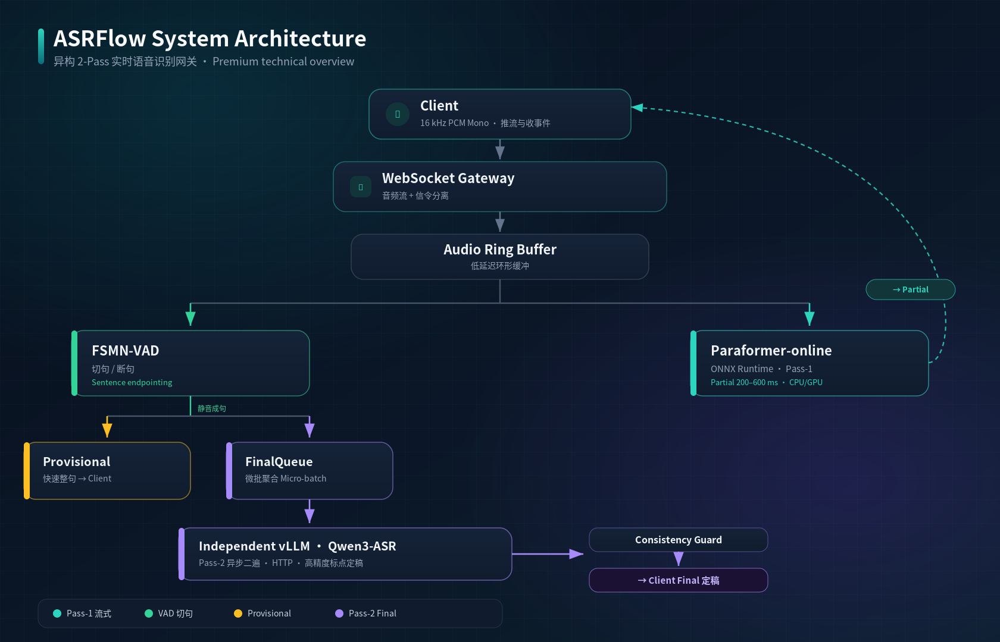

01
异构 2-Pass 流水线
首遍 Paraformer-online（ONNX Runtime）提供 200~600ms 快速反馈（partial / provisional），二遍异步调用独立部署的 Qwen3-ASR（vLLM）输出高精度标点定稿（final）。
面向低延迟与高准确率兼顾场景的解耦型实时语音识别网关。
ASRFlow 是一个异构两阶段（2-Pass）实时语音识别网关。客户端通过单个 WebSocket 长连接持续推送 16kHz PCM 音频流并接收识别事件。网关将识别流水线划分为两遍：首遍（Pass-1）基于 ONNX Runtime 运行流式 Paraformer-online，输出 200~600ms 低延迟中间字（partial）并在 VAD 断句时产出快速整句（provisional）；二遍（Pass-2）在断句后异步调用独立部署的 Qwen3-ASR vLLM 服务，输出带标点的高精度定稿文本（final）。
在长时间流式会话中，流式模型常面临近零静音/底噪环境下的偶发孤立 Token 吐字、时间戳漂移以及下游重复拼接退化等问题。ASRFlow 通过分层退化防护（近零静音过滤、VAD 状态门控、超时看门狗及二遍一致性校验），在保持低延迟交互体验的同时，拦截异常字符积累。
服务采用解耦架构：网关自身不绑定重型推理框架，通过 HTTP 接口与独立部署的 vLLM 通信；首遍引擎支持多路并发动态合批，内置断线重连（resume 会话缓存）、动态热词偏置、说话人识别与逆文本正则化（ITN），并提供开箱即用的全 Mock 运行模式，本地无需 GPU 与模型权重即可调试全链路。
单个 WebSocket 承载 16kHz PCM 音频 Binary 帧与 JSON Text 控制信令。
ONNX Runtime Paraformer-online 输出 200~600ms 增量中间字 partial。
断句后异步调用独立部署的 Qwen3-ASR vLLM，产出带标点 final 文本。
L0 静音过滤 + L1 VAD 锁存 + L2 看门狗与 Consistency Guard 一致性守卫。
针对实时语音交互的流式低延迟、并发吞吐与长会话稳定性设计。
首遍 Paraformer-online（ONNX Runtime）提供 200~600ms 快速反馈（partial / provisional），二遍异步调用独立部署的 Qwen3-ASR（vLLM）输出高精度标点定稿（final）。
流式引擎支持多路并发 WebSocket 连接在动态时间窗口内组批推理，显著提升 GPU / CPU 吞吐利用率，同时兼顾单连接低时延交互体验。
L0 近零静音（<-80 dBFS）过滤偶发 Token；L1 VAD 未起段抑制并锁存起始时间戳防漂移；L2 超时看门狗切段送二遍裁决，配合 Consistency Guard 校验防幻觉积累。
二遍模型通过标准 HTTP 接口解耦调用独立部署的 vLLM 进程。网关轻量纯粹，vLLM 不进入网关依赖树，便于前后级独立调度、异构部署与伸缩。
支持基于 session_id 的客户端断线重连与状态恢复（resume 会话缓存机制）；支持客户端主动发送 commit 信令强制切句提交。
内置全套 Mock 引擎，本地无需 GPU 与模型权重即可体验推流与识别；另支持动态热词偏置、CAM++ 说话人识别、ITN，以及 /healthz 与 Prometheus /metrics。
清晰的模块分层与解耦数据流：WebSocket 接入、首遍合批推理、二遍异步定稿与守卫防护。

WebSocket 会话管理、单连接 PCM 音频分帧与控制信令解析、HTTP 探针。
FSMN-VAD 起止判决、ONNX Runtime Paraformer-online 多路动态合批推理。
独立 vLLM Qwen3-ASR HTTP 服务、CAM++ 说话人识别、ITN 正则化与守卫。
环境准备：Python ≥ 3.10。无需下载模型权重即可体验完整推流与识别全链路。
# 克隆仓库
git clone https://github.com/zyf8827/asrflow.git
cd asrflow
# 安装最小基础依赖
pip install -r requirements-base.txt# 启动全 Mock 网关（监听 WebSocket 10095 / HTTP 10096）
python3 main.py \
--port 10095 \
--http_port 10096 \
--streaming_backend mock \
--final_backend mock \
--vad_backend mock \
--speaker_backend mock# 发送测试音频并接收流式 partial / provisional / final 识别事件
python3 demo/console_client.py \
--uri ws://127.0.0.1:10095 \
--audio fixtures/sample_16k.wav \
--full